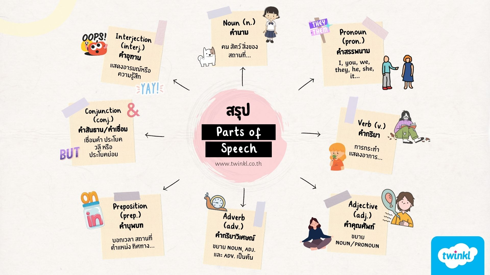

Part of Speech
Part of Speech คือ การแบ่งคำในภาษาอังกฤษตามหน้าที่ที่คำนั้นทำในประโยค การเข้าใจชนิดของคำเป็นพื้นฐานสำคัญในการสร้างประโยค
1.1 Noun — คำนาม
ใช้เรียก คน สัตว์ สิ่งของ สถานที่ หรือสิ่งที่เป็นนามธรรม ตัวอย่าง
teacher = ครู
student = นักเรียน
dog = สุนัข
school = โรงเรียน
happiness = ความสุข
ในประโยค: The student reads a book. นักเรียนอ่านหนังสือ คำว่า student เป็น Noun เพราะเป็นชื่อของคน1.2 Pronoun — คำสรรพนาม
ใช้แทนคำนาม เพื่อไม่ต้องกล่าวคำนามซ้ำ ตัวอย่าง I = ฉัน you = คุณ/พวกคุณ he = เขา she = เธอ it = มัน we = พวกเรา they = พวกเขา ตัวอย่าง: Jane is a student. She is smart. She ใช้แทน Jane1.3 Verb — คำกริยา
แสดง การกระทำหรือสภาวะ ตัวอย่าง eat = กิน run = วิ่ง study = เรียน sleep = นอน be = เป็น/อยู่/คือ ตัวอย่าง: They play football. play คือ Verb เพราะแสดงการกระทำ1.4 Adjective — คำคุณศัพท์
ใช้ ขยายคำนามหรือสรรพนาม เพื่อบอกลักษณะ เช่น สี ขนาด อายุ ความรู้สึก ตัวอย่าง beautiful = สวย big = ใหญ่ small = เล็ก happy = มีความสุข difficult = ยาก She has a beautiful dress. beautiful ขยายคำว่า dress1.5 Adverb — คำกริยาวิเศษณ์
ใช้ขยาย Verb, Adjective หรือ Adverb เพื่อบอกลักษณะการกระทำ เวลา สถานที่ หรือระดับ ตัวอย่าง quickly = อย่างรวดเร็ว slowly = อย่างช้า ๆ very = มาก carefully = อย่างระมัดระวัง He runs quickly. quickly ขยาย runs1.6 Preposition — คำบุพบท
ใช้แสดงความสัมพันธ์เกี่ยวกับ สถานที่ เวลา หรือทิศทาง ตัวอย่าง in = ใน on = บน at = ที่/เวลา under = ใต้ behind = ข้างหลัง between = ระหว่าง The book is on the table. on แสดงความสัมพันธ์ระหว่าง book กับ table1.7 Conjunction — คำสันธาน
ใช้เชื่อมคำ วลี หรือประโยค ตัวอย่าง and = และ but = แต่ or = หรือ because = เพราะว่า so = ดังนั้น I like cats and dogs. I stayed home because it was raining.1.8 Interjection — คำอุทาน
ใช้แสดงอารมณ์หรือความรู้สึก ตัวอย่าง Wow! = ว้าว! Oh! = โอ้! Ouch! = โอ๊ย! Hey! = เฮ้! Wow! That is beautiful.